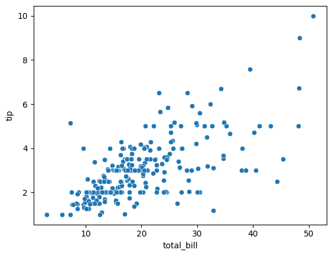
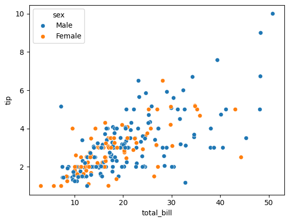
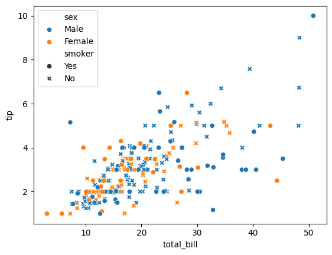
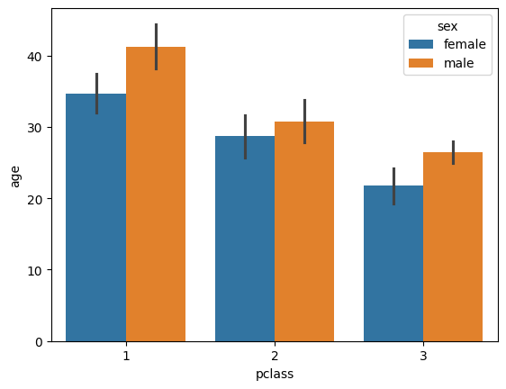
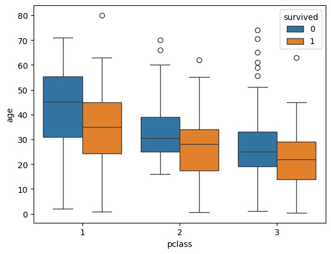
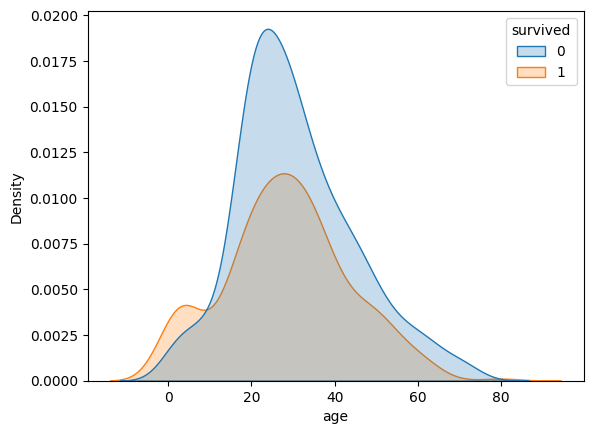
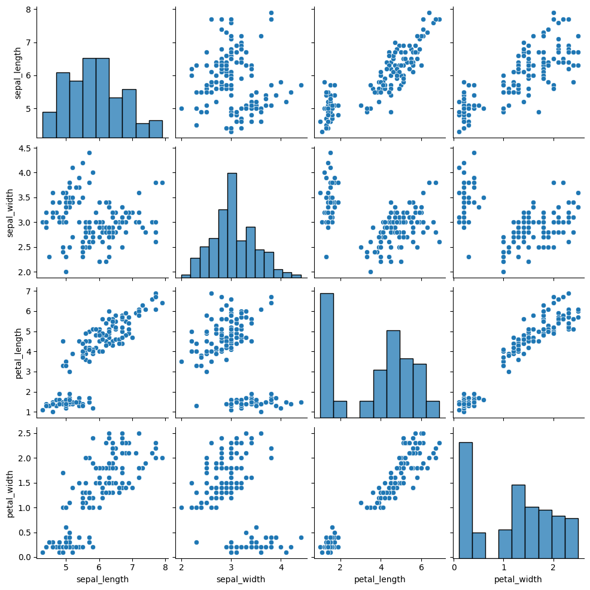
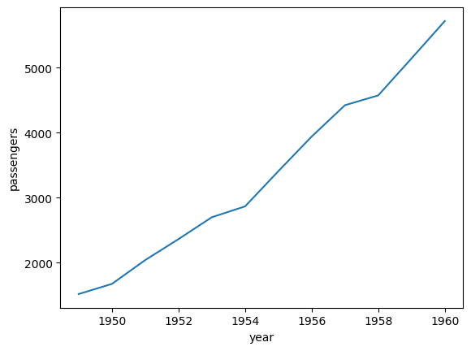

import seaborn as sns
import pandas as pd
titanic = sns.load_dataset('titanic')
tips = sns.load_dataset('tips')
flights = sns.load_dataset('flights')
iris = sns.load_dataset('iris')Bivariate and Multivariate Analysis
This chapter delves into the techniques of bivariate and multivariate analysis, which are essential for understanding relationships between multiple variables in a dataset.
Bivariate Analysis
Bivariate analysis involves examining the relationship between two variables.
Multivariate Analysis
Multivariate analysis involves examining the relationships among three or more variables.
Here are some common techniques for both types of analysis:
We will use titanic, tips, iris, and flights datasets for our examples.
1. Scatterplot (Numerical - Numerical)
If we want to analyze the relationship between two numerical variables: total_bill and tip, we can use a scatterplot.
tips.head()| total_bill | tip | sex | smoker | day | time | size | |
|---|---|---|---|---|---|---|---|
| 0 | 16.99 | 1.01 | Female | No | Sun | Dinner | 2 |
| 1 | 10.34 | 1.66 | Male | No | Sun | Dinner | 3 |
| 2 | 21.01 | 3.50 | Male | No | Sun | Dinner | 3 |
| 3 | 23.68 | 3.31 | Male | No | Sun | Dinner | 2 |
| 4 | 24.59 | 3.61 | Female | No | Sun | Dinner | 4 |
sns.scatterplot(data=tips, x='total_bill', y='tip')
Let’s say we want to know the male and female status of customers in the scatterplot. We can use the hue parameter to differentiate between them.
In this case, we can say that it is a multivariate analysis because we are analyzing the relationship between three variables: total_bill, tip, and sex.
sns.scatterplot(data=tips, x='total_bill', y='tip', hue='sex')
If we want to find who are the smokers and non-smokers in the scatterplot, we can use the style parameter.
sns.scatterplot(data=tips, x='total_bill', y='tip', hue='sex', style='smoker')
2. Bar plot (Numerical - Categorical)
If we want to analyze the relationship between a numerical variable and a categorical variable, we can use a bar plot. We will use the titanic dataset for this example.
titanic.head()| survived | pclass | sex | age | sibsp | parch | fare | embarked | class | who | adult_male | deck | embark_town | alive | alone | |
|---|---|---|---|---|---|---|---|---|---|---|---|---|---|---|---|
| 0 | 0 | 3 | male | 22.0 | 1 | 0 | 7.2500 | S | Third | man | True | NaN | Southampton | no | False |
| 1 | 1 | 1 | female | 38.0 | 1 | 0 | 71.2833 | C | First | woman | False | C | Cherbourg | yes | False |
| 2 | 1 | 3 | female | 26.0 | 0 | 0 | 7.9250 | S | Third | woman | False | NaN | Southampton | yes | True |
| 3 | 1 | 1 | female | 35.0 | 1 | 0 | 53.1000 | S | First | woman | False | C | Southampton | yes | False |
| 4 | 0 | 3 | male | 35.0 | 0 | 0 | 8.0500 | S | Third | man | True | NaN | Southampton | no | True |
sns.barplot(data=titanic, x = "pclass", y = "age", hue = "sex")
3. Box plot (Numerical - Categorical)
We will use the same titanic dataset for this example.
sns.boxplot(data = titanic, x = "pclass", y = "age", hue = "survived")
4. Kdeplot (Numerical - Categorical)
We will use the same titanic dataset for this example.
sns.kdeplot(data = titanic, x = "age", hue = "survived", fill = True)
5. Pairplot (Numerical - Numerical)
If we want to analyze the relationship between multiple numerical variables, we can use a pairplot. We will use the iris dataset for this example.
iris.head()| sepal_length | sepal_width | petal_length | petal_width | species | |
|---|---|---|---|---|---|
| 0 | 5.1 | 3.5 | 1.4 | 0.2 | setosa |
| 1 | 4.9 | 3.0 | 1.4 | 0.2 | setosa |
| 2 | 4.7 | 3.2 | 1.3 | 0.2 | setosa |
| 3 | 4.6 | 3.1 | 1.5 | 0.2 | setosa |
| 4 | 5.0 | 3.6 | 1.4 | 0.2 | setosa |
sns.pairplot(data = iris)
6. Line plot (Numerical - Numerical)
We will use the flights dataset for this example.
flights.head()| year | month | passengers | |
|---|---|---|---|
| 0 | 1949 | Jan | 112 |
| 1 | 1949 | Feb | 118 |
| 2 | 1949 | Mar | 132 |
| 3 | 1949 | Apr | 129 |
| 4 | 1949 | May | 121 |
new_data = flights.groupby('year', as_index=False)['passengers'].sum()
new_data.head()| year | passengers | |
|---|---|---|
| 0 | 1949 | 1520 |
| 1 | 1950 | 1676 |
| 2 | 1951 | 2042 |
| 3 | 1952 | 2364 |
| 4 | 1953 | 2700 |
sns.lineplot(data = new_data, x = 'year', y = 'passengers')
These are the manual techniques for bivariate and multivariate analysis. To automate this process, we can use the ydata-profiling library, which provides a comprehensive report of the dataset, including bivariate and multivariate analysis.
from ydata_profiling import ProfileReport
prof = ProfileReport(titanic)
prof.to_file(output_file='output.html')This will generate an HTML file with a detailed report of the titanic dataset, including bivariate and multivariate analysis. You can open the output.html file in your browser to explore the report.